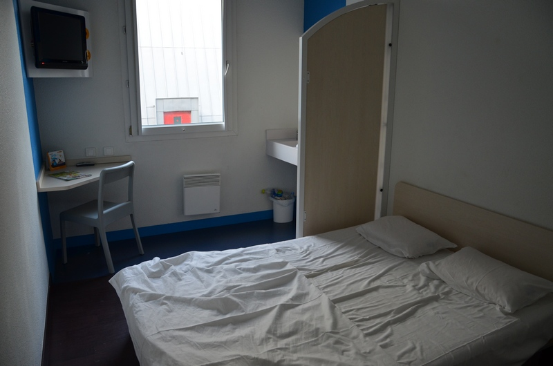
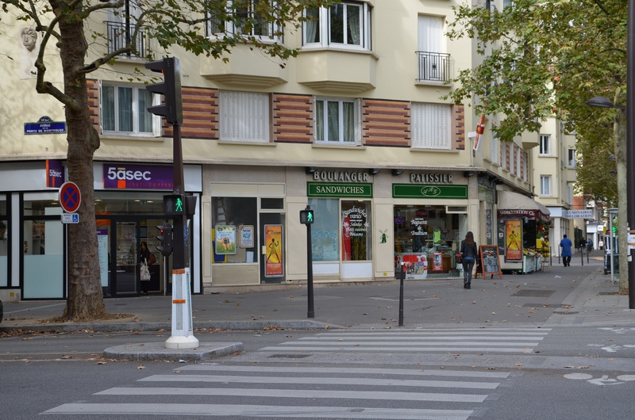
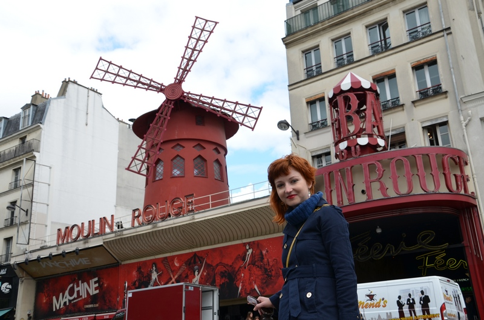
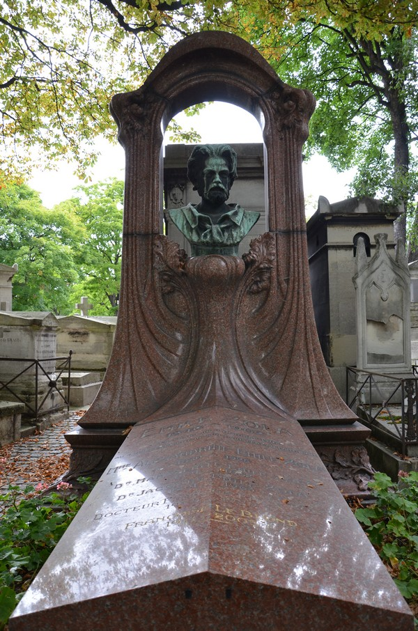
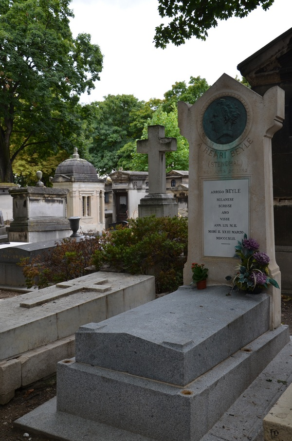
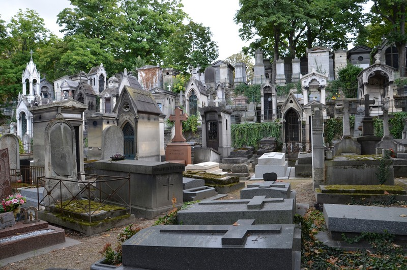
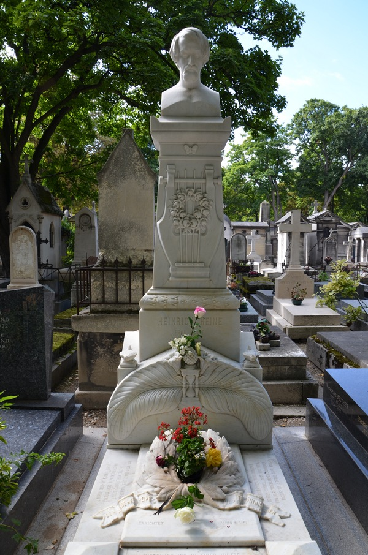
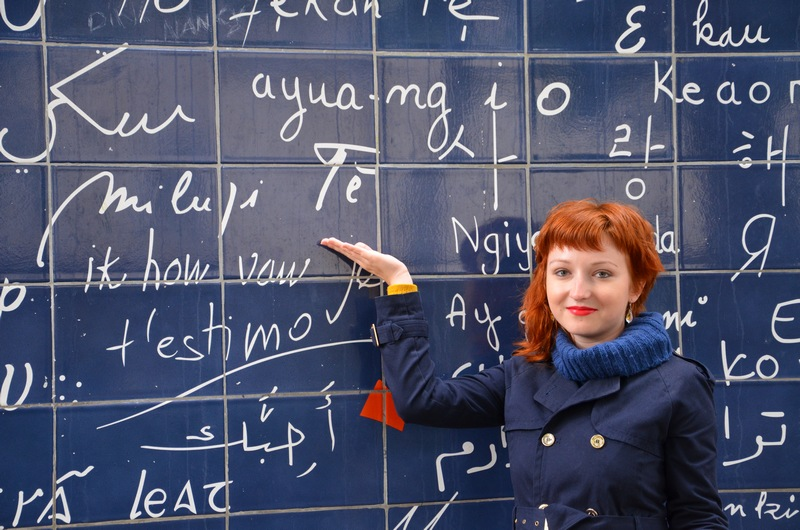
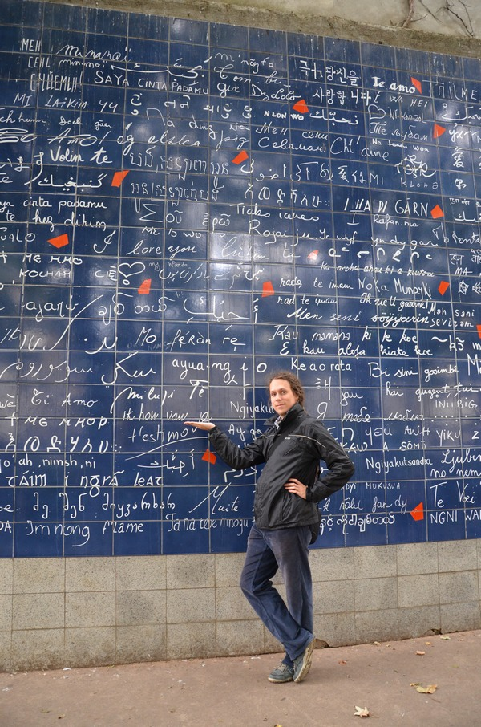

Ve středu jsme dali našemu bydlení ve Formuli sbohem, sbalili si batohy a vyrazili na poslední 3 dny naší dovolené do Montmartru. Loučili jsme se i s naší oblíbenou pekárnou, kde už si nás za těch pár dnů stačili zapamatovat :-). Po poslední snídani jsme tedy zamířili na metro a vydali se vstříc novým zážitkům.

Pokoj ve Formuli

“Naše” pekárnička :-)
Metro nás vyplivnulo přímo na náměstí Pigalle. Rychle jsme se zorientovali a vydali se hledat náš hotel André Gill. Od zastávky metra to bylo opravdu kousíček. Náš hotel se nacházel v mrňavé zapadlé slepé uličce a přestože měl na dveřích vylepeno, jaká různá ocenění kde získal, nás na první pohled zrovna neohromil. Na recepci nás vítaly dvě obrovské chundelaté kočky (nechaly se hned ochotně hladit a vrněly :-)) a mladá ne příliš příjemná ženská, která nás hned na úvod dostala tím, že ceny za ubytování uvedené na stránkách jsou bez DPH, takže budeme muset platit ještě pár euro navíc. Nevypsala nám ani žádný doklad o tom, že jsme to zaplatili a nad naším dotazem jen mávnula rukou, že je to oukej, že to má zapsané v knize. Ubytovat jsme se mohli až po druhé hodině, a protože bylo teprve 12, rozhodli jsme se vyrazit na ty 2 hodiny někam ven. Batohy jsme si naštěstí mohli nechat na hotelu. Radši jsme si ale samozřejmě všechny cennosti vzali s sebou, protože zatím v nás tenhle hotel ani jeho personál moc důvěry nevzbuzoval…
Vrátili jsme se zpátky na Pigalle a porvé se prošli onou nemravnou uličkou plnou sexshopů, barů a podobných pochybných podniků tvářících se za denního světla zcela nevinně O:-). Naše první kroky samozřejmě nevedly nikam jinam, než k věhlasnému Moulin Rouge. Usoudili jsme ale, že bude lepší vrátit se sem večer, až to tu bude mít tu pravou atmosféru.

Moulin Rouge
Přinutila jsem Péťu, abychom se šli podívat alespoň na jeden pařížský hřbitov - a ten v Montmartru byl myslím dobrou volbou, protože je opravdu zajímavý a fotogenický. Pařížané si docela potrpí na okázalé hrobky, až mi to někdy přišlo přehnané. Tím, co turisty přivádí na pařížské hřbitovy, jsou především slavná jména těch, kteří zde spočívají. Zrovna v Montmartru je jich poměrně dost. Hned u vchodu najdete přehlednou mapku, ve které jsou zakresleny všechny hroby, které by vás mohly zajímat. Mě zajímala především ta literární jména jako Stendhal nebo Heinrich Heine, u jehož hrobu mi Péťa procítěně zarecitoval Lorelei <3 ! Za zmínku stojí také hrob Émila Zoly - tedy bývalý, neboť jak víte z minulého příspěvku, dostalo se mu té pocty být zařazen mezi velikány, kteří odpočívají v Pantheonu.

Émile Zola

Stendhal

Hřbitov v Montmartru

Heinrich Heine
Po prohlídce hřbitova už byl pomalu čas vrátit se na hotel a ubytovat se. Nakoupili jsme si nějaké jídlo a vraceli se malebnými uličkami Montmartru zpátky k našemu novému hotelu. Dostali jsme pokoj v prvním patře a hned na úvod se dostavil znovu šok. První patro bylo totiž plné zedníků, kteří pravděpodobně zrovna prováděli rekonstrukci několika pokojů - bylo cítit, že se tam minimálně maluje. Naštěstí jsme neměli v plánu se na hotelu moc zdržovat, ale i tak to ten počáteční negativní dojem z tohoto místa jen umocnilo.
Pokojík sám o sobě byl ale hezký, i když poměrně tmavý. Těžké červené závěsy a celkově růžovo-červené barevné ladění pokoje působily docela retro. Koupelna byla opravdu miniaturní, půlku prostoru navíc ještě zabíral bidet, nebezpečně se hýbající, kdykoliv jste do něj zavadili nohou. Na druhou stranu ale všude bylo čisto, a tak nebyl důvod si stěžovat. Nezdrželi jsme se dlouho a jen co jsme se najedli, vyrazili jsme zase ven prozkoumávat další zákoutí této svérázné čtvrti.


Nevýhodou Montmartru je to, že musíte pořád do kopce :D… Na druhou stranu je ale malý a není problém prochodit jej křížem krážem za jedno odpoledne. My jsme se však “zasekli” na Place du Tertre, které jsme obšeli asi třikrát kolem dokola a zas a znova si prohlíželi “umělce” při práci. Samozřejmě je tu spousta kýčařů, především těch, co malují portréty, ale některá dílka se nám naopak líbila moc. Na Place du Tertre jsme strávili každý den moře času, až si nás tam už někteří museli pamatovat :D.


Dalším zajímavým zákoutím Montmartru, které jsme si oblíbili natolik, že jsme k němu chodili den co den, byl parčík za zastávkou metra Abbesses. Na tomto místě se nachází veliká zeď pokrytá modrými kachličkami. Ty jsou pomalované nápisy “Miluji tě” ve všech možných světových jazycích. Chvíli nám trvalo, než jsme v té změti našli nápis v češtině, ale byl tam :-)!

Aj lav jů

Zeď lásky :)
Na večer jsme měli v plánu také druhou návštěvu Louvru, ale protože dojmy, které jsme si přinesli, by vydaly ještě na dlouhé vyprávění, věnuji i tomuto muzeu samostatný článek :-)…
Komentáře (2)
Komentáře jsou uzavřené.